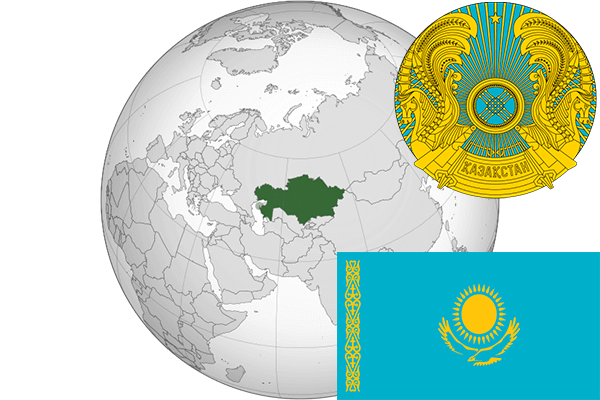

To`liq nomi: Qozog`iston Respublikasi
Region: Markaziy Osiyo
Qonunchilik shakli: Respublika
Mustaqillik kuni: 16-dekabr 1991-yil (Sobiq Ittifoqdan)
Poytaxt: Astana
Maydoni: 2 724 902 km² (dunyoda 9 -o`rinda )
Chegaradosh davlatlari: Rossiya, Xitoy, Qirg`iziston, O`zbekiston, Turkmaniston
Aholisi: 18 096 900 (dunyoda 63 - o`rinda, 2017 -yil roʻyxat)
Aholi zichligi: 6,64/km²
Aholining o`rtacha yoshi: 67,35 yil (72,8 ayollar, 61,9 erkaklar)
Rasmiy tili: Qozoq tili
Dini: 71,2% musulmonlar, 25,17% Pravoslav xristianlari va b.
Pul birligi: Tenge
Telefon prefiksi: +7
Internet domen: .kz
Xalqaro tashkilotlarga a`zoligi: BMT (1992 – yildan), MDH, Shanxay Hamkorlik tashkiloti (2001-yildan), Yevrosiyo iqtisodiy ittifoqi (01,01,2015-yildan)
Dengiz va okeanlarga chiqishi: Kaspiy va Orol dengizlar
YIM: Butun: $ 460,692 mlrd, Jon boshiga $ 25 669 (2016 - yil roʻyxati)
Yirik shaharlari: Olmata, Astana, Shimkent, Karaganda